En la década de 1920, el futuro del club de Boedo estaba lleno de ilusión.
Al Campeonato de 1923 llegaron los delanteros Edelmiro Delor y Juan Félix Maglio.
En el grupo ya estaban Luis Monti, Pedro Omar, Alfredo Caricaberi y Lindelof Acosta,
entre otros futbolistas destacados de la época. El título terminaria llegando nomas.
El conjunto AzulGrana ganó 17 de sus 20 partidos, empató 1, perdió solo 2, marcó 34 goles y encajó solo 13.
Atrás quedaron Independiente y River.
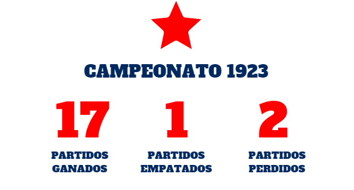
A través de la consistencia, se mantiene la base del campeonato.
San Lorenzo retuvo una vez más el título de Asociación de Fútbol Aficionado.
El estigma que rodea al antiguo estadio de la Avenida de la Plata tiene mucho que ver con el segundo logro:
de local,
el equipo marcó 32 de los 48 goles que hizo en este torneo y, como si fuera poco, ganó 11 de los 14 partidos
que jugó ahí.
La impronta del guapo nuevamente se camuflaba en la camiseta azulgrana. Había otros candidatos,
como Gimnasia La Plata, pero finalmente San Lorenzo sería el flamante bicampeón.
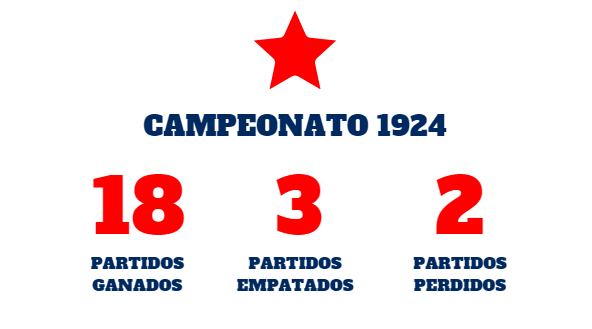
Los siguientes años no fueron malos. de lo contrario. Si bien no hubo vueltas olímpicas, el Ciclon fue
subcampeón en los campeonatos del 25 y 26.
Era el preludio de algo importante, y nuevamente el aroma de los buenos augurios estaba en el aire.
Tal vez, la aparición de Diego García (uno de los más grandes jugadores que pasaron por el club) haya sido
una buena explicación de ese síntoma positivo que contagiaba al barrio.
El campeonato de 1927 fue incluso predecible, y el equipo fue invencible en ocasiones. Estableció un récord
histórico con 47 juegos invicto (del 2 y 26 de mayo al 31 y 27 de diciembre, 39 victorias y 8 empates).
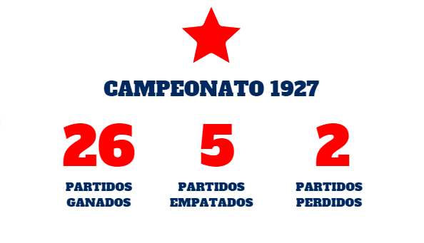
Era Profesional
Campeonato 1933
En 1931 se terminaría la época amateur. El país ya contaba con la Asociación del Fútbol Argentino.
Era hora de poner en la vitrina el primer trofeo oficial para San Lorenzo. Indefectiblemente,
en esos años no existía otra cuna callejera más cálida que el potrero. Ahí se formó y creció
Diego García, el crack que conduciría a los Gauchos de Boedo hasta un nuevo título. El nuevo
apodo, uno de los tantos que se pegarían en la piel del club para no irse más, surgió por la
cantidad de jugadores del Interior con que contaba el plantel (Genaro Cantelli, Alberto Chividini y
Gabriel Magán, entre otros). Tal vez, en este torneo también se gestó algo que luego seguiría a
San Lorenzo como un perro fiel: el sufrimiento, casi una forma de vida que ya es algo habitual
en la idiosincrasia de Boedo. Luego de perder ante Independiente, el campeonato llegó a la última fecha con Boca como único líder, con un punto más que los Gauchos.
Ellos tenían que definir la cuestión nada menos que contra River, en el viejo estadio de Avenida Alvear
y Tagle.
Y el Azulgrana frente a Chacarita como visitante. El partido contra el Funebrero terminó antes que el de
Boca,
por eso los jugadores se quedaron en la cancha a esperar este parto deportivo. No había radios: el
plantel se
enteraba por unas claves que aparecían en los carteles de la revista Alumni (un operador recibía las
noticias por
teléfono y cambiaba las chapas). Allá, en ese ring clásico, Bernabé Ferreyra había sepultado a los
Xeneizes para que
llegara el primer título de la era oficial, a pura garra y pasión. Otra vuelta olímpica como
consecuencia de un equipo
que, por momentos, fue intratable. En ese año, por caso, el prestigioso periodista
Hugo Marini (jefe de deportes del diario Crítica) denominaría el poderío de ese San Lorenzo como un
Ciclón que se llevaba
por delante a los rivales. Nacía, acaso, el apodo por excelencia.
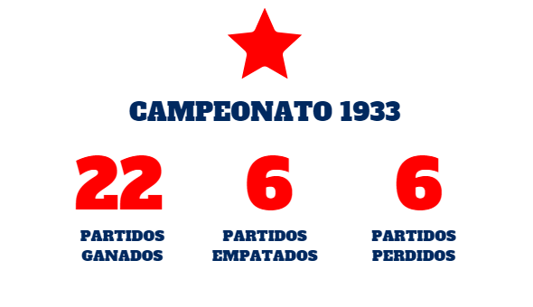
Copa De Honor 1936
El trofeo estuvo siempre en las vitrinas, pero el título tardó 77 años en ser reconocido oficialmente por la Asociación del Fútbol Argentino.
Desde 5 de julio de 2013, San Lorenzo cuenta otra estrella, la que cosechó durante la primera parte de una temporada en la que hubo dos certámenes a una ronda.
El conjunto dirigido por el ex jugador multicampeón José Fossa tuvo en Sebastián Gualco a un arquero de Selección,
en Ricardo Alarcón al goleador y una línea ofensiva similar a la del equipo que había dado la vuelta tres años atrás, con el gran Diego García a la cabeza.
En esa rueda inicial, el Ciclón convirtió 45 goles en 17 partidos, de los cuales ganó 12 partidos,
empató 4 y perdió sólo 1. Así se adjudicó la Copa de Honor y, luego, cerró el año como líder de la tabla general,
tres puntos por encima de River, que obtuvo la Copa Campeonato y después se quedó una especia de Súper Final disputada entre los dos campeones.
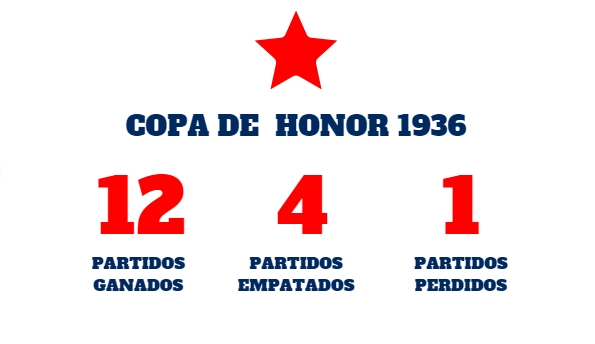
Campeonato 1946
En 1945 habían llegado Armando Farro (de Banfield) y René Pontoni (Newell’s) y ya estaba en el club el gran Rinaldo Martino.
La Reserva que venía de ser campeona y prometía muchísimo: la llamaban La Orquesta. Despiertos para no desperdiciar las bondades del semillero,
el técnico Diego García y su ayudante Pedro Omar, no dejaron pasar de largo la oportunidad de exprimir ese diamante en bruto.
Por eso promovieron al arquero Mierko Blazina, nacido en Trieste, ciudad que perteneció alternativamente a Italia y a la vieja Yugoslavia.
Además del Flaco, subieron Héctor Tablada y Luis Mariano. El equipo ya contaba con otro pibe de la cantera, que se había afianzado
en la defensa por estilo y presencia: José Pepe Vanzini. Como si faltara algo, a él se acopló Oscar Basso, otro grande. En la previa
al torneo del 46 todo era optimismo. El Ciclón tenía los nombres, faltaba plasmarlo en la cancha. El sueño del título era muy real.
Y, para darle el toque que faltaba, se contrató a Oscar Silva, un puntero izquierdo que venía de Racing.
No es casual que este equipo haya quedado en el ojo clínico de los argentinos, hinchas o no del club. Los números, muchas veces, son el mejor resumen:
convirtió 90 goles en 30 partidos, es decir, un promedio de tres por fecha. Obviamente, esto refleja la vocación ofensiva.
Era un equipo exquisito, técnico, de buen pie, armonioso para la vista. Resultó campeón con 46 puntos, cuatro más que Boca.
Dejó su huella por el gran Trío de Oro, imparable, avasallador: del total de goles, 55 fueron del terceto, 20 de Pontoni, 18
de Martino y 17 de Farro. Luego de una primera rueda en la que terminó segundo, detrás de River, se destaparía para aplastar rivales:
ganó 12 partidos (incluso a River y Boca) y perdió sólo uno, ante Estudiantes. En el medio, le hizo siete goles a Rosario Central,
seis a Atlanta y cinco a Racing, Lanús y Platense. Al final, terminó coronado con 20 partidos ganados, seis empates y apenas cuatro derrotas.
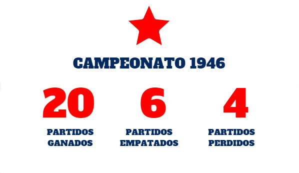
Campeonato 1959
Después del subcampeonato del 58, la política fue no hacer cambios radicales en el plantel.
Se mantuvo la base, sobre todo en el ataque, en el que Sanfilippo había sido el goleador del torneo.
El club contrató a Omar Higinio García, que venía de Tigre. Era el socio que le faltaba al Nene, estratega,
hábil, cerebral, uno de los mejores talentos que vio el club. Ellos dos, más Héctor Facundo,
Miguel Angel Ruiz y Norberto Boggio, se convirtieron en Los Cinco Pistoleros. Pero García no
fue el único que se sumó para darle forma al esperado campeonato. Llegaron Schiro, de Arsenal,
y Humberto Cancino, de San Martín de Tucumán. Pero García no fue el único que se sumó para darle
forma al esperado campeonato. Llegaron Schiro (de Arsenal) y Humberto Cancino, de San Martín de Tucumán.
San Lorenzo terminó la primera rueda como único líder, seguido por Independiente.
El 1° de noviembre llegó un día clave. Había que ganarle a Ferro para asegurar el título.
Pero el Verde de Caballito, la gran revelación en ese torneo, lo derrotó por 3.0. Por suerte,
Racing, el perseguidor, también perdió y el desenlace no preveía otra imagen que la de Boedo de fiesta.
El Ciclón de Barreiro salió campeón tres fechas antes y se dio otros lujos,
como dar la vuelta olímpica bajo la lluvia contra Huracán (triunfo 6-3 incluido) y
cerrar el torneo venciendo 2-1 a Boca, en la Bombonera.
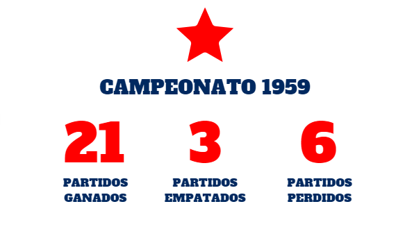
Metropolitano 1968
En las crónicas de la época ya no cabían las palabras para calificar las bondades del San Lorenzo que se coronó campeón del torneo Metropolitano de 1968.
O sí, una sola: Matadores. Aquel equipo dirigido por el brasileño Elba de Paula Lima (Tim) fue el primer campeón invicto del
fútbol argentino (con 16 partidos ganados y 8 empatados), contó con el ataque más goleador (49 tantos) y la valla menos vencida (12 goles en contra).
Con las figuras que venían desarrollándose lentamente en Boedo, Tim los dirigentes apuntaron sus cañones a
conseguir la experiencia necesaria para apuntalar tanto talento. Pero, quizá sin darse cuenta, cruzaron todos los límites,
porque al sumar ese año al uruguayo Sergio Bismark Villar, a Carlos Veglio, Victorio Cocco y Antonio Rosl, estaban firmando el pasaporte a la gloria.
Ante la superposición de estrellas, el técnico le dio a Veglio el puesto de Fischer, adelantando a éste en el campo;
también paró a Cocco unos metros delante de Telch. Así, el brasileño acomodó las líneas con cuatro defensores
(Albrecht rompiendo en ofensiva), cinco volantes (Rendo, Telch, Veglio, Veira y Cocco) y Fischer como único delantero.
Cuando se lesionó el Bambino, apareció Pedro González para acompañar a Fischer en la delantera, pasando Veglio a pararse
por el centro del ataque, un tanto retrasado. De todos modos, la rotación constante era el fuerte de la formación,
con la presión como caballito de batalla y la habilidad como detonante rumbo a las victorias,
que comenzaron a sucederse hasta el 2-1 bañado de gloria en la final contra Estudiantes campeón del mundo.
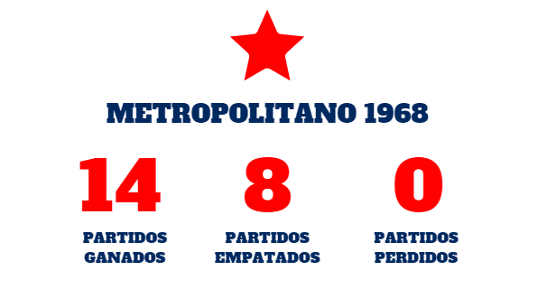
Metropolitano 1972
Con la base del campeón del 68 que aún permanecía en Boedo, para el inicio del Metro 72 se dio un regreso de peso, que nadie esperaba.
Diez años después de haberse ido a Boca, Sanfilippo volvía a calzarse la azulgrana y alcanzó un buen rendimiento,
contra todos los pronósticos, que lo denostaban por retornar a los 37 años: con ocho goles fue el tercer scorer del equipo,
detrás de Ayala (14) y Fischer (11). La impronta del Toto Lorenzo pronto comenzó a verse reflejada en el campo de juego,
donde el virtuosismo cedió terreno hasta casi ser equiparado por la táctica. Lógicamente, el pizarrón no le ocultaba al
técnico la categoría que tenía a su disposición. Así fue que, de a poco, empezaron a sobresalir Villar y Telch, erigidos
como los pilares fundamentales de una alineación que jornada tras jornada se fortalecía, apoyada, además, en una delantera
que contaba con puntales como Ayala, Heredia, Figueroa y un imparable Scotta.
Además, ostentaba el orgullo de poder decir que en el equipo base, ocho jugadores eran de la cantera: Irusta,
Glaría, Heredia, Espósito, Telch, Figueroa, Ayala y Sanfilippo, amén de que surgieron del club 21 de los 28
futbolistas que actuaron en el Metropolitano. Con pragmatismo, el equipo llegó a liderar el Metro en la fecha 11,
junto a Newell’s, Boca y Racing, al ganarle a Estudiantes por 2 a 1. Recién en la 13 quedó como único puntero,
al derrotar 1-0 a Atlanta. Ya consolidado, San Lorenzo terminó liderando la primera rueda. Pocos rivales le
hicieron fuerza y sólo perdió tres juegos. Uno de ellos ante Huracán, cuando ya se había coronado campeón la
fecha anterior, al empatar con Atlanta. Para los que se quejaban de que ésa no era una formación lujosa:
la vuelta olímpica la dio en la cancha del clásico rival.
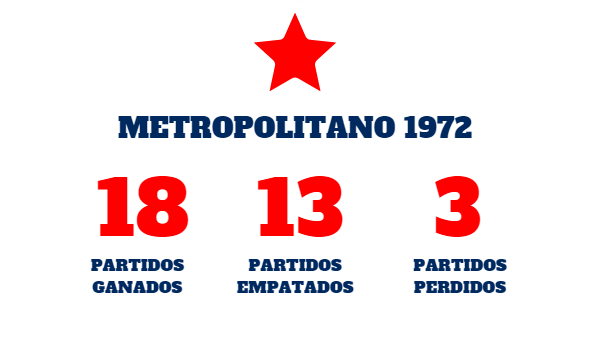
Nacional 1972
Con el funcionamiento aceitado y el sabor del éxito recorriendo todavía el paladar,
San Lorenzo afrontó el torneo Nacional de ese año con la misma base campeona del Metro. De hecho,
Ayala volvió a ser el goleador del equipo, esta vez con ocho anotaciones, seguido por Chazarreta (5),
de excelente performance y uno de los de que más actuó (12 presencias, como Rosl, Rezza y Ayala),
y ¿quién si no?, Sanfilippo (2). Conocedores de sus tareas, los futbolistas armaron una formación
tan compacta que terminó ganado invicta la Zona A, con diez victorias y tres empates.
Y si el andar demoledor precisaba de algún guiño de la suerte para que cerrara el círculo perfecto,
San Lorenzo entró en un sorteo, junto a River y Boca, que determinaría cuál de los tres equipos pasaría
a la final sin jugar. ¡Y fue el Ciclón! El superclásico se disputó y los Millonarios fueron los finalistas.
Claro, se toparon con la sensación del momento, encarnada por Irusta; Rezza y Rosl; Villar,
Espósito y Heredia; Figueroa, Telch, Ayala, Cocco y Chazarreta. La paridad condujo a tiempo
suplementario, sufrido, mordido y desequilibrado por el Lele Figueroa a los 10 minutos de la
segunda parte, para dejar a los fieles del Padre Massa como los primeros en ganar los dos torneos de un mismo año.
Nacional 1974
Con el antecedente fresco de Juan Carlos Lorenzo conduciendo a San Lorenzo al bicampeonato, Osvaldo Zubeldía,
respetadísimo en el ambiente por su exitoso paso por Estudiantes de La Plata, además de ser siempre considerado
por su tesón para trabajar, siguió el camino del Toto en cuanto a la preponderancia que tomó el aspecto táctico.
En un campeonato dividido en cuatro zonas, San Lorenzo terminó liderando la suya, la C, con un punto de ventaja
sobre Ferro. El desgaste y las lesiones le fueron abriendo paso a figuras como el arquero Alfredo Anhielo,
uno de los 11 jugadores surgidos de las Inferiores, sobre 21 integrantes del plantel.
Además, se dio la definitiva consolidación de talentos como Ricardo Rezza y Jorge Mario Olguín.
Si el paso firme dado en la primera ronda del torneo no había conformado a algunos, la etapa final fue como un golpe de nocaut:
en un mini torneo con los ocho mejores equipos del país (jugaron todos contra todos, enfrentándose una vez con cada rival
en cancha neutral, integrando la zona Rosario Central, Vélez, Talleres, Independiente, Ferro, Boca y Newell’s),
San Lorenzo fue implacable, al punto de ganar cinco encuentros, empatar uno y perder otro, superando por un punto a Central,
con esta base: Anhielo; Piris, Villar; Rubén Glaría, Telch, Olguín; Scotta, Chazarreta; Beltrán, Cocco y Oscar Ortiz.
Gran incidencia tuvo el inicio de un momento histórico de Héctor Scotta: hizo 16 goles en ese Nacional, anunciando
lo que haría al año siguiente, marcando un récord histórico al anotar 60 goles en la temporada.
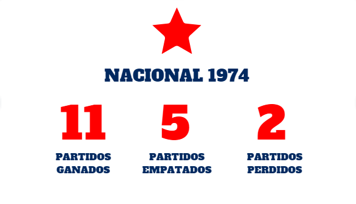
Torneo Clausura 1995
El 1-1 como local frente a Gimnasia LP en el debut del Clausura 95 fue toda una señal de
lo que iba a venir a lo largo del campeonato. Un mano a mano nada menos que contra el conjunto dirigido por Carlos Timoteo Griguol,
repleto de emociones, esperanzas y desesperanzas. Con un equipo de perfil guerrero más que arrollador,
ese San Lorenzo se las ingenió para empezar a sacar resultados que lo iban a depositar en la punta en poco tiempo, aunque algunos tropezones lo hicieron titubear.
Pero fue justamente en esos momentos de cierta duda que aparecieron las arengas del Bambino Veira, las manos de Passet,
la experiencia de Ruggeri, la clase de Silas, la elegancia de Galetto los goles clásicos del Pampa Biaggio (les convirtió a
Independiente, Racing, River, Huracán -2- y Boca), el viaje de la ilusión a Rosario, el grito del cielo del Gallego González
y las gracias eternas a Javier Mazzoni, autor del gol de Independiente contra Gimnasia que le permitió a San Lorenzo dar la vuelta después de 21 años.
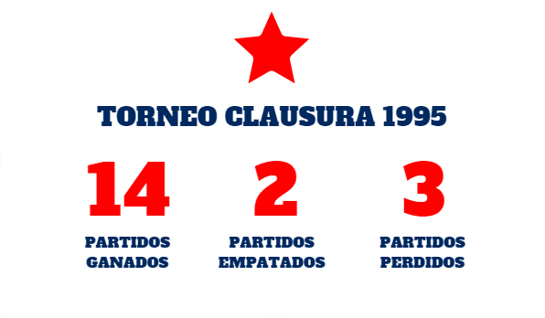
Torneo Clausura 2001
Con un San Lorenzo a cinco puntos del líder, llegó el clásico contra River que bien pudo haber sido el final de las ilusiones.
En el Nuevo Gasómetro, una contundente derrota por 3-1 simuló dejar al equipo de Manuel Pellegrini sin chances reales en el Clausura.
Sin embargo, ese día fue el principio de un sueño casi de ciencia ficción y que hasta estos días no pudo ser superado.
La obra del Ingeniero comenzó su edificación de récords y victorias inolvidables, y a dos fechas del final se empezó a
abrir el camino a la bandera a cuadros. El Ciclón fue a la cancha de Ferro para enfrentar a Argentinos, mientras que River visitó a Huracán en Parque Patricios.
En el imaginario del público era difícil pensar que el Globo le daría una mano a San Lorenzo...
Sin embargo, los goles de Bernardo Romeo para el 2-0 y el 3-2 del Globo, lo dejaron en las puertas del cielo.
La gloria llegó en el Nuevo Gasómetro, con un 2-1 ante Unión que trajo el primer título del nuevo milenio,
producto de un equipo imparable, goleador, con Romeo, Leandro Romagnoli, Sebastián Saja, Raúl Estévez y
Pablo Michelini como abanderados del éxito. Once triunfos consecutivos y 47 puntos cosechados aseguran
un récord que todavía sigue intacto, intocable, para aquellos que aspiran a quedar en la historia grande del fútbol argentino.
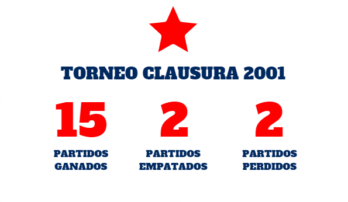
Torneo Clausura 2007
El 10 de junio está marcado con un círculo rojo en el almanaque sanlorencista. En la misma fecha, pero de distinto año, claro,
el Nuevo Gasómetro registró dos momentos emotivos: la vuelta de la mano de Pellegrini en 2001 y la consagración con Ramón Díaz
en el Clausura 2007. El Pelado llegó para ese mismo torneo y, sin incorporaciones rutilantes (Aureliano Torres, Cristian Ledesma
y Gastón Fernández), logró motivar a un equipo que empezó a salir de memoria, en el que se destacaron Agustín Orion, Sebastián
Méndez, Ledesma y el tridente ofensivo compuesto por Fernández, Andrés Silvera y Lavezzi.
Aunque estos tres recién comenzaron a jugar juntos a mitad del torneo, ese poder de gol fue irresistible para los rivales de turno.
Un triunfo implacable ante Boca en la Bombonera, éxitos en su paso por el Interior del país, una racha que encandiló al resto,
un partidazo para vencer 4-3 a Independiente y la goleada 3-0 sobre Racing son destellos de una campaña que se destacó por
la inteligencia y la determinación de un grupo que ese 10 de junio, una fecha antes del final del torneo, se coronó al superar 4-2 a Arsenal.
Torneo Inicial 2013
La noble idea de Juan Antonio Pizzi, ese protagonismo y control de juego en distintos sectores de la cancha, tuvo su recompensa recién en
el último minuto del último partido del torneo, ahí mismo cuando la mano izquierda de Torrico se convirtió en estatua al contenerle a Allione
algo más que un penal en movimiento y sostener, así, el 0-0 ante Vélez que permitió dar la vuelta en un Amalfitani sin hinchas de San Lorenzo.
La gran fiesta se desató en San Juan y Boedo, con miles y miles de cuervos celebrando junto al plantel campeón en la emblemática esquina azulgrana.
Se festejó el título como así también la clasificación a la Copa Libertadores. Y hubo, desde luego, mimos por doquier, para fiereza de Kannemann,
para la vehemencia de Buffarini, para la presencia de Gentiletti, para el corazón de Mercier y la jerarquía de Ortigoza, para las apariciones de
Correa y Villalba, para la calidad de Piatti, para el alma y el fútbol de Romagnoli, y, por supuesto, para San Torrico.